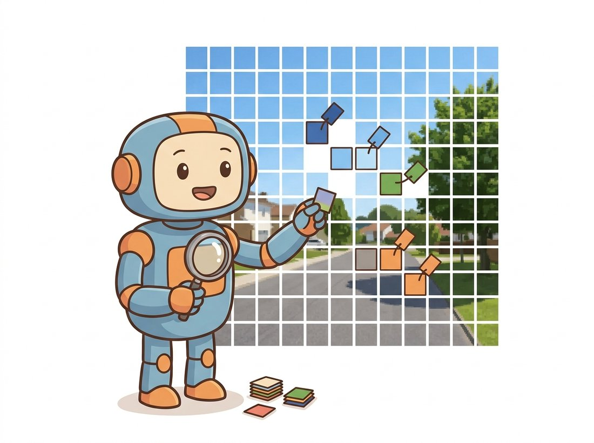
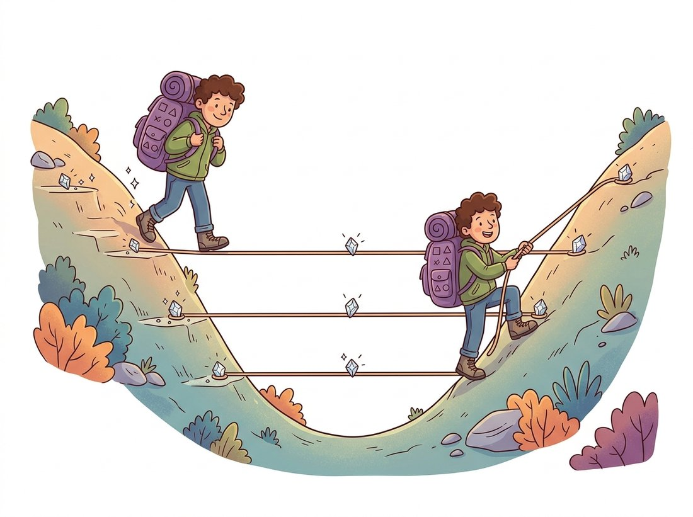

"A classifier squints at the whole picture and shouts one word. I was asked to whisper a word to every pixel, and to make the whispers agree along the edges. The hard part was never the whispering; it was remembering, after all that pooling, where the edges had been."
A Decoder Trying to Undo the Encoder's Forgetting
Semantic segmentation assigns a class label to every pixel, which turns a classification network into a dense predictor and creates one central engineering problem: the backbone destroys spatial resolution through pooling and strides, and the segmenter must recover it. Every architecture in this section is a different answer to that one problem. The fully convolutional network upsamples its coarse prediction and fuses in earlier, finer feature maps through skip connections. U-Net makes that fusion symmetric and complete, with a skip at every resolution. DeepLab refuses to lose the resolution in the first place, using dilated convolutions to grow the receptive field while keeping the feature map large. Learn to see all three as variations on "keep the semantics, get the detail back," and the rest of dense prediction becomes familiar.
In Chapter 23 a network learned to localize objects with boxes; a box is a rectangle, and the world is not made of rectangles. Semantic segmentation asks the finest spatial question we can pose to a vision model: for every pixel, what category does it belong to? The output is no longer a single label or a handful of boxes but a full-resolution map the same size as the input, where each location holds a class index. There is no notion of separate objects yet, two adjacent cars become one connected blob of the "car" class, that is the job of Section 24.2. Here the question is purely "what," answered everywhere at once (the illustration below makes the contrast with whole-image classification concrete).

1. The Task and the Resolution Problem Beginner
Take any image classifier from Chapter 20, say a ResNet. It alternates convolutions with downsampling so that a $224 \times 224$ input becomes a $7 \times 7$ grid of deep feature vectors before a global pool and a linear layer produce one label. That downsampling is not incidental; it is how the receptive field grows large enough to recognize whole objects, and it is how the network stays affordable. But a segmenter needs an output the size of the input, and a $7 \times 7$ map cannot localize a thin road sign or a hair-thin boundary. This is the resolution problem, and it has a precise shape: deep features are semantically rich but spatially coarse, while shallow features are spatially precise but semantically shallow. Good segmentation needs both.
The first move, due to the fully convolutional network (FCN) of Long, Shelhamer, and Darrell in 2015, is almost embarrassingly simple. A classifier's final layers are fully connected, which forces a fixed input size and discards spatial layout. Replace each of them with an equivalent $1 \times 1$ convolution, and the network becomes "fully convolutional": it accepts any input size and produces a coarse spatial map of class scores instead of one vector. Upsample that coarse map back to the input resolution and you have a segmentation, blurry, but a segmentation. The genuine contribution was fixing the blur, and Figure 24.1.1 shows how.
The skip connections are the heart of FCN. The coarse prediction from the deepest layer (stride 32) knows what is in the scene but not precisely where. So FCN upsamples it by 2 and adds the prediction computed from the stride-16 feature map, then upsamples again and adds the stride-8 prediction. Each addition injects spatial detail the deep layer had thrown away. The result, called FCN-8s, has the semantics of the deep layers and boundaries sharp enough to be useful. This pattern, fuse a coarse-but-deep map with a fine-but-shallow one, is the same multi-scale idea you met as the Gaussian and Laplacian pyramids of Chapter 4, now learned instead of hand-built.
A semantic segmenter is, mathematically, a classifier applied independently at every output location. If the final layer produces a tensor of shape (batch, classes, height, width), then for each spatial position you have a vector of class logits, exactly as a classifier produces for a whole image. The loss is a per-pixel cross-entropy averaged over all positions. This single reframing means every tool from image classification, backbones, transfer learning, the softmax and cross-entropy of Chapter 18, carries over unchanged. The only new ingredient is keeping spatial resolution alive.
2. U-Net: Symmetric Encoder-Decoder Beginner
U-Net, published the same year as FCN for biomedical images, took the skip idea to its logical conclusion and became the most widely used segmentation architecture ever written. Its shape is a U: a contracting encoder that halves resolution and doubles channels stage by stage, then an expanding decoder that mirrors the encoder, doubling resolution and halving channels. The crucial detail is that at every decoder stage, the upsampled feature map is concatenated with the encoder feature map of the same resolution before further convolution. Where FCN added a few coarse skips, U-Net wires a skip at every level, so detail is reinjected continuously, not just at the end. The illustration below offers a mental model for that continuous reinjection, and Figure 24.1.2 shows the symmetry.

The code below implements a compact U-Net. Read it against Figure 24.1.2: DoubleConv is the two-convolution block at each level (each convolution followed by the batch normalization of Section 19.4, which rescales activations to stabilize training, and a ReLU), the encoder stores its outputs in skips, and each decoder stage upsamples and concatenates the matching skip before convolving. This is a complete, trainable model.
# A compact, fully trainable U-Net for semantic segmentation.
# DoubleConv is the per-level two-conv block; the encoder stores its outputs
# as skips, and each decoder stage upsamples then concatenates the matching skip.
import torch
import torch.nn as nn
import torch.nn.functional as F
class DoubleConv(nn.Module):
"""Two 3x3 convs, each followed by BatchNorm and ReLU. The U-Net building block."""
def __init__(self, in_ch, out_ch):
super().__init__()
self.block = nn.Sequential(
nn.Conv2d(in_ch, out_ch, 3, padding=1, bias=False),
nn.BatchNorm2d(out_ch), nn.ReLU(inplace=True),
nn.Conv2d(out_ch, out_ch, 3, padding=1, bias=False),
nn.BatchNorm2d(out_ch), nn.ReLU(inplace=True),
)
def forward(self, x):
return self.block(x)
class UNet(nn.Module):
def __init__(self, in_ch=3, num_classes=21, widths=(64, 128, 256, 512)):
super().__init__()
self.downs = nn.ModuleList()
self.ups = nn.ModuleList()
self.pool = nn.MaxPool2d(2)
prev = in_ch
for w in widths: # build the contracting path
self.downs.append(DoubleConv(prev, w))
prev = w
self.bottleneck = DoubleConv(widths[-1], widths[-1] * 2)
for w in reversed(widths): # build the expanding path
self.ups.append(nn.ConvTranspose2d(w * 2, w, 2, stride=2)) # learnable upsample
self.ups.append(DoubleConv(w * 2, w)) # in_ch = w (up) + w (skip)
self.head = nn.Conv2d(widths[0], num_classes, 1) # 1x1 -> per-pixel logits
def forward(self, x):
skips = []
for down in self.downs:
x = down(x)
skips.append(x) # save full-resolution features
x = self.pool(x)
x = self.bottleneck(x)
skips = skips[::-1] # deepest skip first
for i in range(0, len(self.ups), 2):
x = self.ups[i](x) # transposed conv: upsample
skip = skips[i // 2]
if x.shape[-2:] != skip.shape[-2:]: # guard odd sizes
x = F.interpolate(x, size=skip.shape[-2:], mode="nearest")
x = torch.cat([skip, x], dim=1) # concatenate the skip
x = self.ups[i + 1](x) # fuse with a DoubleConv
return self.head(x) # (B, num_classes, H, W)
model = UNet(num_classes=21)
logits = model(torch.randn(2, 3, 256, 256))
print(logits.shape) # torch.Size([2, 21, 256, 256])forward method stores each encoder output in skips, then every decoder iteration runs a ConvTranspose2d upsample, concatenates the matching skip with torch.cat, and fuses with a DoubleConv. The output tensor carries one logit per class at every input pixel, ready for a per-pixel cross-entropy loss.
The output shape, (2, 21, 256, 256), is the whole point: a 21-class logit vector at each of the $256 \times 256$ pixels of each of the 2 images in the batch. To train it, you pass these logits and an integer label map of shape (2, 256, 256) to nn.CrossEntropyLoss, which treats every pixel as an independent classification example. The transposed convolution (ConvTranspose2d) is a learnable upsampler; we will compare it with simple interpolation and with the dilated approach next.
Learners often believe the upsampling step, whether a transposed convolution or bilinear interpolation, restores the spatial detail that pooling threw away, so a powerful enough decoder would make skip connections unnecessary. In fact, upsampling can only redistribute the information that survives in the coarse feature map; once the stride-32 map has merged a thin road sign or a hair-thin boundary into a single cell, no upsampler can invent that boundary back. This is exactly why FCN and U-Net add skip connections: the fine detail is reinjected from the earlier, high-resolution encoder maps, not reconstructed by the decoder. A transposed convolution learns how to spread coarse values into a larger grid; it does not learn what was discarded. Diagnostic test: if you removed every skip and only enlarged the decoder, which pixels would still be wrong? The interiors of large objects would recover fine, but boundaries and thin structures would stay blurred, because their information was never in the bottleneck to begin with.
U-Net was designed for cell-microscopy images where labeled training data is scarce, sometimes only 30 annotated images. To compensate, the original paper leaned heavily on elastic deformations as augmentation, warping the training images and their masks together. The architecture proved so robust to small data that the same U on a slightly modified diet became the denoising network at the heart of diffusion models in Chapter 33. A 2015 microscopy tool quietly became the workhorse of generative AI a decade later.
3. DeepLab: Dilated Convolutions and Atrous Spatial Pyramid Pooling Intermediate
FCN and U-Net both let the backbone shrink the feature map and then fight to rebuild it. DeepLab questions the premise: why lose the resolution at all? The trick is the dilated (also called atrous) convolution, which inserts gaps between the kernel taps. A standard $3 \times 3$ kernel with dilation rate $r$ samples the input at positions spaced $r$ apart, so its receptive field grows from $3$ to $1 + 2r$ in each dimension while the number of weights, and the output resolution, stay the same. Set $r = 2$ and a $3 \times 3$ kernel covers a $5 \times 5$ region; set $r = 4$ and it covers $9 \times 9$. You enlarge the receptive field, the thing that downsampling was buying you, without ever downsampling.
The output size of a convolution with kernel $k$, dilation $r$, padding $p$, and stride $s$ on an input of size $n$ is
With the effective kernel size $k_{\text{eff}} = r(k-1) + 1$ standing in for $k$, this is just the ordinary convolution-size formula from Chapter 19. Stride $N$ simply means the feature map is $N$ times smaller than the input, so a smaller stride means a larger, more detailed map. DeepLab keeps the backbone's late stages at stride 8 or 16 instead of 32, replacing the lost stride with dilation so the receptive field still reaches whole objects. On top of the high-resolution feature map it places atrous spatial pyramid pooling (ASPP): several parallel dilated convolutions at different rates, plus a global pooling branch, all concatenated. Because each branch sees a different effective scale, ASPP captures objects from small to large in one shot, the learned analog of running a detector over an image pyramid. The code below shows dilation in action and a minimal ASPP.
# Dilation in action, then a minimal ASPP module.
# The dilated conv enlarges the receptive field without shrinking the map;
# ASPP runs several dilation rates plus global pooling in parallel and fuses them.
import torch
import torch.nn as nn
# A dilated 3x3 conv keeps spatial size but enlarges the receptive field.
x = torch.randn(1, 64, 64, 64)
plain = nn.Conv2d(64, 64, 3, padding=1, dilation=1) # RF 3x3, out 64x64
dilated = nn.Conv2d(64, 64, 3, padding=4, dilation=4) # RF 9x9, out 64x64
print(plain(x).shape, dilated(x).shape) # both torch.Size([1, 64, 64, 64])
class ASPP(nn.Module):
"""Atrous Spatial Pyramid Pooling: parallel dilated convs + image-level pooling."""
def __init__(self, in_ch, out_ch=256, rates=(6, 12, 18)):
super().__init__()
self.branches = nn.ModuleList(
[nn.Conv2d(in_ch, out_ch, 1)] + # 1x1 branch
[nn.Conv2d(in_ch, out_ch, 3, padding=r, dilation=r) # dilated branches
for r in rates]
)
self.pool = nn.Sequential(nn.AdaptiveAvgPool2d(1), # global context
nn.Conv2d(in_ch, out_ch, 1))
self.project = nn.Conv2d(out_ch * (len(rates) + 2), out_ch, 1)
def forward(self, x):
feats = [b(x) for b in self.branches]
g = self.pool(x)
g = nn.functional.interpolate(g, size=x.shape[-2:], mode="bilinear",
align_corners=False) # broadcast to map size
feats.append(g)
return self.project(torch.cat(feats, dim=1))
print(ASPP(64)(x).shape) # torch.Size([1, 256, 64, 64])dilated conv with dilation=4 sees a 9x9 region yet still outputs 64x64, matching plain. The ASPP module runs a 1x1 branch, three dilated branches at rates=(6, 12, 18), and a global-pooling branch, then self.project fuses them. Both outputs stay at 64x64, the resolution DeepLab refuses to give up.DeepLabv3+ then adds a small decoder, a single U-Net-style skip from an early high-resolution layer, to sharpen boundaries that even the dilated features leave a little soft. So the three architectures converge: FCN fuses a few skips, U-Net fuses skips everywhere, and DeepLab avoids most of the loss then fuses one skip to clean up. All three are answering the same resolution problem stated in subsection 1.
Take the dilated convolution from Code Fragment 2 and rerun it with dilation set to 1, 2, 4, then 8 (set padding equal to the dilation each time so the output stays 64x64). Print dilated(x).shape for each and confirm the spatial size never changes. Then compute the effective kernel size with $k_{\text{eff}} = r(k-1) + 1$ by hand: 3, 5, 9, then 17 pixels. The thing to observe is the dissociation: the weight count and the output resolution hold perfectly constant while the receptive field more than quintuples. That single sweep is the whole DeepLab argument in four lines, you are buying reach without paying resolution, which no amount of pooling can do.
Watch what happens when you stack four dilated $3 \times 3$ convolutions at rates $1, 2, 4, 8$. The receptive field grows additively by each layer's effective kernel minus one, reaching $1 + (2 + 4 + 8 + 16) = 31$ pixels across, and the feature map never shrinks: it stays full resolution from input to output. To cover that same 31-pixel span the plain CNN of Chapter 19 would have to pool roughly four times, collapsing a $256 \times 256$ map down to $16 \times 16$, a 256-fold loss of spatial cells, exactly the detail DeepLab refuses to throw away. Same receptive field, same weight count, zero resolution lost: that is why dilation, not just a bigger decoder, is the lever that fixes dense prediction.
Who: a three-engineer startup mapping weed coverage in crop fields from a low-flying drone, 2024. Situation: their first model was a from-scratch U-Net trained on a few hundred hand-labeled aerial tiles, and it segmented dense weed patches well. Problem: isolated single weeds, a few pixels across, were missed, and the field boundaries it drew were jagged, which corrupted the per-field coverage statistics the agronomists actually bought. Decision: they kept U-Net as a baseline but switched the production model to DeepLabv3+ with a ResNet-50 backbone, reasoning that the ASPP multi-scale branches would catch both the tiny isolated weeds and the large contiguous patches, and that the decoder skip would sharpen the field edges. They fine-tuned from ImageNet weights rather than training from scratch, following the transfer-learning recipe of Chapter 21. Result: mean IoU on the validation tiles rose by about seven points, driven almost entirely by the small-object and boundary classes; the coverage statistics stabilized enough to ship. Lesson: the resolution problem is not abstract. When your errors cluster on small objects and boundaries, the architecture that preserves resolution and reasons at multiple scales is the one to reach for, and starting from pretrained weights beats more from-scratch epochs almost every time.
4. Training and Inference in Practice Intermediate
At inference, the network produces logits of shape (B, C, H, W), and the predicted label map is simply the argmax over the class dimension. The thresholding-and-argmax step is the dense version of the thresholding you met in Chapter 2 and the per-pixel decision that morphology in Chapter 6 then cleans up. The training loss, as established in subsection 2, is a per-pixel cross-entropy; the full menu of losses for imbalanced and boundary-heavy cases is the subject of Section 24.6. The short training and inference loop below ties the model from subsection 2 to real tensors.
# One end-to-end dense-prediction loop: a single training step then inference.
# CrossEntropyLoss treats every pixel as an independent classification example;
# argmax over the class channel turns the logit map into a predicted label map.
import torch, torch.nn as nn
model = UNet(num_classes=21) # from subsection 2
criterion = nn.CrossEntropyLoss(ignore_index=255) # 255 = "unlabeled", skipped in the loss
optimizer = torch.optim.AdamW(model.parameters(), lr=1e-3)
# One training step on a dummy batch.
images = torch.randn(4, 3, 256, 256) # (B, 3, H, W)
targets = torch.randint(0, 21, (4, 256, 256)) # (B, H, W) integer class per pixel
logits = model(images) # (B, 21, H, W)
loss = criterion(logits, targets) # per-pixel cross-entropy, auto-averaged
loss.backward(); optimizer.step(); optimizer.zero_grad()
print(f"loss: {loss.item():.3f}") # e.g. loss: 3.085
# Inference: argmax over the class channel gives the predicted label map.
model.eval()
with torch.no_grad():
pred = model(images).argmax(dim=1) # (B, H, W) predicted classes
print(pred.shape, pred.unique().numel(), "classes present")ignore_index=255, the standard convention for pixels that should not contribute to the loss, the AdamW optimizer driving the single loss.backward() step, and the final argmax(dim=1) that turns the (B, 21, H, W) logits into a (B, H, W) label map.The U-Net above is about 45 lines and the ASPP another 25, excellent for understanding, but you would not write them for production. torchvision ships DeepLabv3 and FCN with COCO-pretrained weights behind a uniform API:
# Load a COCO-pretrained DeepLabv3 and run it in four lines.
# weights.transforms() supplies the exact preprocessing the model was trained with,
# so we never hand-write resize-and-normalize; argmax turns logits into a mask.
import torch
from torchvision.models.segmentation import deeplabv3_resnet50, DeepLabV3_ResNet50_Weights
weights = DeepLabV3_ResNet50_Weights.DEFAULT
model = deeplabv3_resnet50(weights=weights).eval() # backbone + ASPP + classifier
preprocess = weights.transforms() # resize, normalize, to-tensor
img = torch.rand(3, 520, 520) # stand-in for a loaded PIL image tensor
batch = preprocess(img).unsqueeze(0)
with torch.no_grad():
out = model(batch)["out"] # (1, 21, H, W) logits
mask = out.argmax(1)[0] # predicted label map
print(mask.shape) # torch.Size([520, 520])weights.transforms() applies the exact preprocessing the model was trained with, and argmax(1) turns the logits into a label map.This replaces about 70 lines of model code plus a weights-download-and-load step with four lines, and the library handles the backbone construction, the ASPP rates, the pretrained-weight loading, and the exact preprocessing the model was trained with. For specialized backbones and ready-made losses, segmentation_models.pytorch constructs a U-Net or DeepLab on any of dozens of encoders with one call. Build the model once by hand to learn it; import it forever after.
The FCN-U-Net-DeepLab lineage still trains the fastest, most reliable specialized segmenters, but the frontier has moved to general-purpose backbones and architectures. Transformer encoders such as SegFormer (Section 24.4) now match or beat DeepLab on Cityscapes and ADE20K with better efficiency, and self-supervised backbones like DINOv2 (2024, the subject of Chapter 25) produce features so strong that a tiny linear segmentation head on frozen features rivals fully fine-tuned older models. Most strikingly, the Segment Anything Model (Section 24.5) and 2024-2025 open-vocabulary segmenters such as the Grounded-SAM family let you segment classes that were never in any training label set, by naming them in text. The convolutional encoder-decoder is no longer the only way to recover resolution; it is now one option among learned-attention and prompt-driven alternatives.
An engineer proposes dropping all skip connections from U-Net and instead upsampling the bottleneck straight to full resolution with one large transposed convolution, arguing it is simpler. Explain in three or four sentences what would degrade in the output and why, using the "semantically rich but spatially coarse" framing from subsection 1. Which kinds of pixels (interior of large objects, thin structures, boundaries) would suffer most, and which would be largely unaffected?
Write a short function that, given a list of (kernel_size, dilation) pairs for a stack of convolutions (all stride 1), computes the total receptive field in pixels. Verify it on the DeepLab-style stack [(3,1), (3,2), (3,4), (3,8)] and report the result. Then compute, for comparison, how many stride-2 downsampling stages a plain CNN would need to reach the same receptive field, and write one sentence on the resolution cost of that alternative.
Using torchvision's pretrained fcn_resnet50, deeplabv3_resnet50, and a from-scratch U-Net trained briefly on the Oxford-IIIT Pet segmentation set, run all three on the same ten validation images and compute mean IoU per model (use the metric code from Section 24.6). Produce a side-by-side figure of the predicted masks and write a short paragraph: where do the boundaries differ, which model is sharpest on thin structures, and does the ranking match what subsections 2 and 3 would predict?